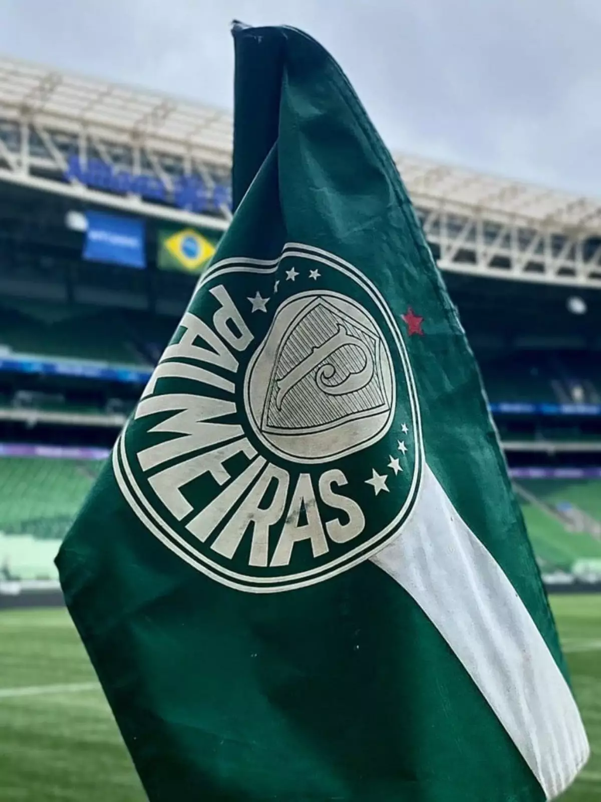
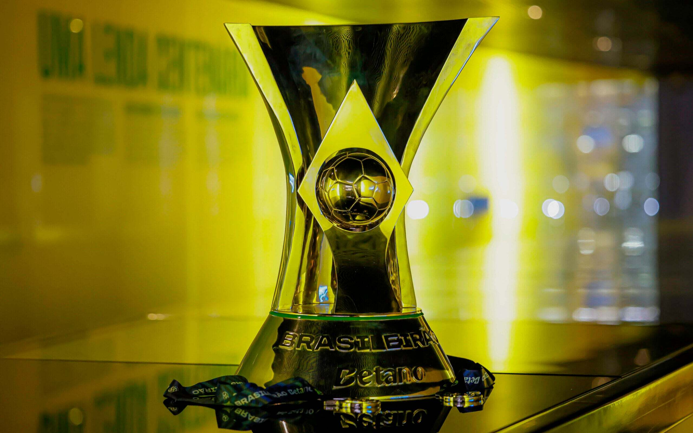

meu primeiro post
por: Larissa de Oliveira
boas vindas a meu novo blog! aqui compartilharei atualização sobre o palmeiras
vou compartilhar algumas coisas sobre o palmeiras
por: Larissa de Oliveira
boas vindas a meu novo blog! aqui compartilharei atualização sobre o palmeiras

a sociedade Esportiva Palmeiras foi fundada em 26 de agosto de 1914 por imigrantes italianos em São Paulo com o nome de Palestra Italia. O clube cresceu, venceu títulos importantes e precisou mudar de nome para Palmeiras em 1942 devido ao contexto da Segunda Guerra Mundial. Tornou-se um dos maiores vencedores do futebol brasileiro e mundial.

e atualmente palmeiras está seguindo como um dos maiores campẽos do brasileirão com 12 titulos no seu total
Eleito o melhor time do mundo de 2021 no ranking da Federação Internacional de História e Estatísticas do Futebol (IFFHS, na sigla em inglês),[28] o Palmeiras é a equipe brasileira com o maior número de títulos de abrangência nacional conquistados, sendo o único a vencer todas as competições oficiais que disputou criadas no país, inicialmente pela Confederação Brasileira de Desportos (CBD) e, a partir de 1980, pela Confederação Brasileira de Futebol (CBF).[29] O alviverde possui 18 conquistas deste porte,[30] com destaque maior para seus 12 títulos do Campeonato Brasileiro (atual recordista):[31] 1960, 1967,(1) 1967,(2) 1969, 1972, 1973, 1993, 1994, 2016, 2018, 2022 e 2023. Além destes campeonatos, o Palmeiras já venceu no país as Copas do Brasil de 1998,[32] 2012, 2015 e de 2020, a Supercopa Rei de 2023 e a Copa dos Campeões de 2000,[33] competições também organizadas pela entidade máxima do futebol brasileiro.
fonte:https://pt.wikipedia.org/wiki/Sociedade_Esportiva_Palmeiras